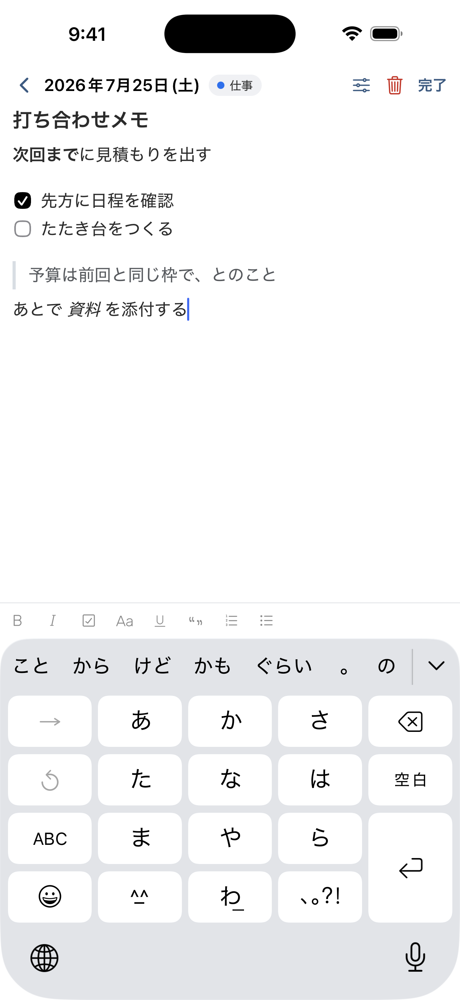
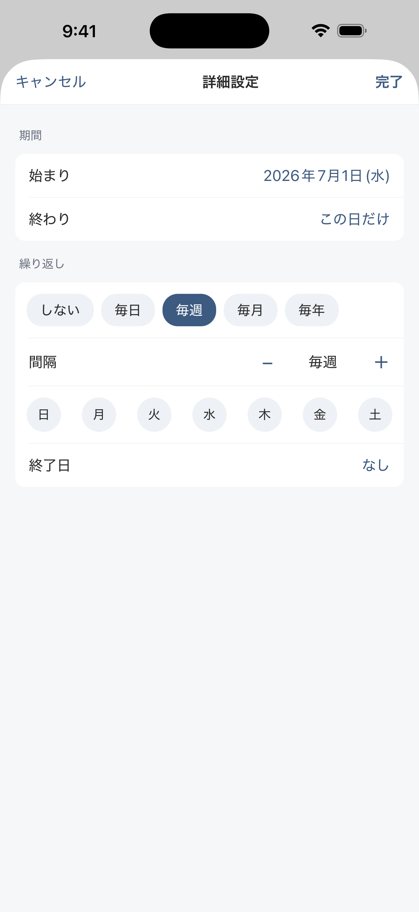
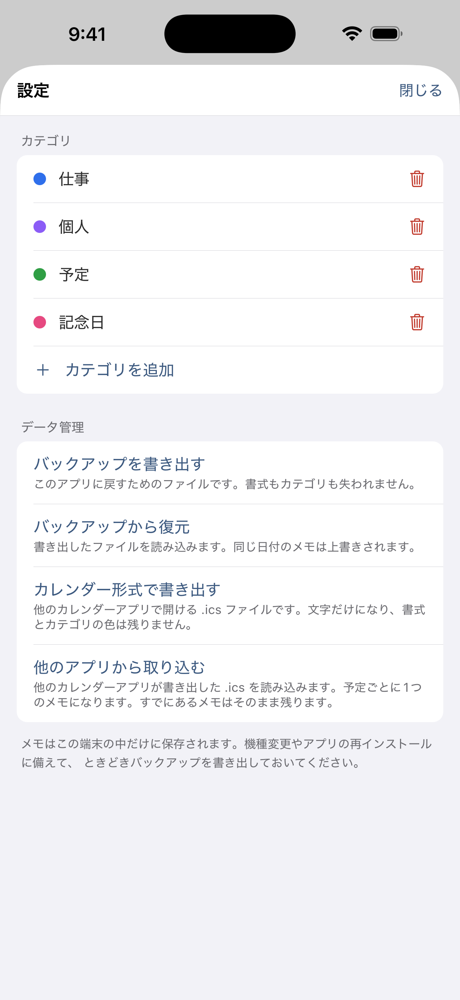

思いついたら、
その日にすぐ。
日付をタップして、そのまま書くだけ。保存ボタンも、フォルダ分けも、 タイトルを付ける手間もありません。
iPhone 向け・近日公開日付をタップして、そのまま書くだけ。保存ボタンも、フォルダ分けも、 タイトルを付ける手間もありません。
iPhone 向け・近日公開
その月に何があるかが
カレンダーの上でわかる

見出し・チェックリスト・
引用も使える

期間や繰り返しは
詳細設定の中だけに

カテゴリの色分けと
バックアップ
覚えることを増やさないために、動線を絞っています。
その日のメモ一覧が開きます。何件あっても同じ場所から始まります。
入力が止まると自動で保存されます。保存ボタンを探す必要はありません。
期間や繰り返しは詳細設定の中。ふだんは意識せずに、書くことだけに集中できます。
日付ごとのアプリは、たいてい一行のタイトルしか置けません。このアプリの本文は リッチテキストエディタです。見出しで区切り、チェックリストで 持ち物を並べ、引用で相手の言葉をそのまま残す。買い物リストも、打ち合わせのメモも、 日記も、同じ場所に書けます。
予定管理アプリほど大げさではなく、メモ帳よりは日付に強い。その間を狙っています。
日付をタップするとその日のメモが開きます。入力が止まると自動で保存されるので、 保存ボタンはありません。
見出し・太字・箇条書き・チェックリスト・引用・リンク。買い物リストにも、 打ち合わせのメモにも。
1日に何件でも置けます。何日かにまたがるメモや、毎日・毎週・毎月・毎年の 繰り返しも。毎週なら曜日も選べます。
カテゴリを付けると、カレンダーに色の点が並びます。カテゴリは自由に追加・ 改名・色変更ができます。
機種変更や再インストールに備えてバックアップを書き出せます。書式もカテゴリも そのまま戻せます。
.ics 形式で書き出し・取り込みができます。他のカレンダーアプリからの 乗り換えにも、そこへの移行にも。
「送らない」と書いてあるアプリは多いですが、このアプリは そもそも通信する仕組みを持っていません。
通信しないので、端末をまたいだ同期はできません。 機種変更のときは、設定画面からバックアップを書き出して新しい端末で読み込んでください。 同期が要る方には向きません。